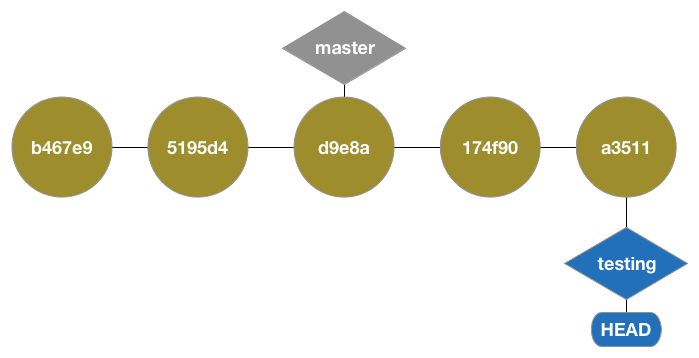

Git!
Git is freaking awesome.
- Passive -- doesn't get in your way.
-
Insanely fast branching and commit switching.
- Code experimentation
- Fast code sharing
- Bug bisecting
- Offline committing
- Partial file commits
- It doesn't cost $25,000
Lots of tools and services
- Powerful command line
- Variety of great GUI tools
- GitHub and BitBucket
- Plenty of answers on StackOverflow
Not many drawbacks
- All functions of Perforce/SVN can be accomplished in Git
- Extra disk space usage is well worth productivity gains
Git/Perforce Differences
Perforce: Deltas

- Stores commits as a series of changes
Git: Snapshots

- Each commit is a snapshot of the entire tree
- Unchanged files are pointers
- Each version is like its own mini-filesystem
Setting up Git
$ git config --global user.name "Dan Schuman"
$ git config --global user.email "dschuman@extensis.com"
Creating a new repository
$ git init
Adding and committing
$ git add [glob]
$ git commit
Staging = Index = Cache
All the same thing
Common workflow
- Complete a small amount of work.
- Stage your changes.
- Commit.
- Step 2 & 3 are usually combined.
The more commits, the better!
Branching

WHY?!

- Allows for independent, concurrent work. (No more waiting for code reviews)
- Quickly switch branches to a stable version to apply hotfixes.
- Better organization of features in progress.
Branches
Branches are fast and disposable.
$ git branch testing

(Any new commits will still stem from master)
Checking out
$ git checkout testing

Branch and checkout combined:
$ git checkout -b testing
Committing to testing
$ git commit -am 'Commit to testing'
Back to master
$ git checkout master
Commit to master
$ git commit -am 'Commit to master'
Merge
$ git merge testing
Another type of merge

Checkout master
$ git checkout master
Merge
$ git merge testing
Fast-forward Merge
Tagging
Marks a commit similar to a checkout, but cannot be moved.
$ git tag tag_name

Remote Repositories
Remotes, fetch, push & pull!
Adding a remote
$ git remote add origin git@github.com:extensis/git-presentation.git
Pushing the changes
$ git push --set-upstream origin master
Changes are only shared when git push is run
Clone
$ git clone git@github.com:extensis/git-presentation.git [dir-name]
Copies the entire repository history, and adds default origin remote.
Fetch
$ git fetch
Updates remotes without modifying local branches.
Pull
$ git pull [remote/branch]
Will run a git fetch followed by a git merge FETCH_HEAD.
Distributed Workfows

- A "blessed" central repository.
- Sharing of feature branches before mainline commit.
- Specific branches for release channels.